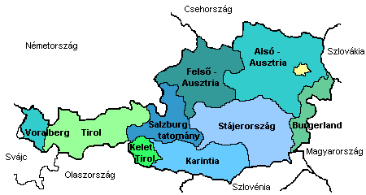
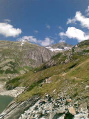
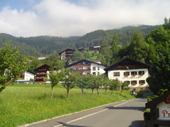

Ausztria ékszer Európa szívében. A lélegzetelállító alpesi tájaktól kezdve az elbűvölő erdőkön és kristálytiszta vizű tavakon át a nagyobb városok nyújtotta kulturális élményekig minden turista megtalálhatja a számítását. A szabad téri örömök szerelmeseit gyógyfürdők, kiváló síterepek, kenuzás, hegyi kerékpározás és kirándulás, valamint változatos növény- és állatvilág hívogatja. A múzeumokat, építészetet, művészetet és zenét kedvelők is gazdag kínálatból válogathatnak.
Ausztria Közép-Európa délkeleti részén helyezkedik el. 83 858 km2 nagyságú területet öt főbb geológiai képződményre terjed ki: a Keleti Alpokra, az Elő-Alpokra és a stájer dombvidékre, a Pannon-medencére, a Bécsi-medencére és a Cseh-masszívumra. Leghosszabb folyója a nyugat-keleti irányban folyó Duna. Ausztria szárazföldi ország, és Németországgal, a Cseh Köztársasággal, Szlovákiával, Magyarországgal, Szlovéniával, Svájccal és Lichtensteinnel határos. Több mint 8 millió lakosa közül 1,7 millió Bécsben él.
Ausztria kilenc tartományból álló szövetségi állam.

Az Alpok Európa legnagyobb kiterjedésű és legmagasabb hegysége, amelynek kiemelkedése 70 millió évvel ezelőtt kezdődött és 2 millió éve fejeződött be. A kb. 500 km hosszú és 150 km széles Osztrák Alpok földtanilag a Kelet-Alpok része. Az Alpok egyike Európa legszebb tájegységeinek. Legfőbb vonzerejük a magasra törő fenséges hegycsúcsok, valamint a hegyvidéki falvak és a hatalmas, jól megművelt völgyekben megbújó kisvárosok különleges, idilli hangulata. Az ökológiai szempontból legértékesebb területeken nemzeti parkokat hoztak létre. Ilyen a Hohe Tauern Nemzeti Park, az Alpok legnagyobb és Európa egyik legnagyobb nemzeti parkja, amely Ausztria legmagasabb hegyvonulatát foglalja magában több mint 300, háromezer métert is meghaladó hegycsúccsal.


Karintia és Kelet-Tirol, Ausztria két legdélibb tartománya, délen Szlovéniával és Olaszországgal, keleten és északon pedig Stájerországgal, illetve Salzburggal határos. A tartományok fő vonzereje a karintiai tóvidék és Hohe Tauern Nemzeti Park. A Tirol többi részétől különálló Kelet-Tirolt inkább Karintiához fűzik szorosabb közlekedési és kulturális kapcsolatok.
A tájképi szépség és a kellemes, mediterrán jellegű éghajlat sok látogatót vonz Karintiába. Karintiát Kelet-Tiroltól az osztrák Alpok leglátványosabb magashegyi útja, a Grossglockner Hochalpenstrasse választja el. A tartomány két nagyobb városa Klagenfurt és Villach.
{kind=link}